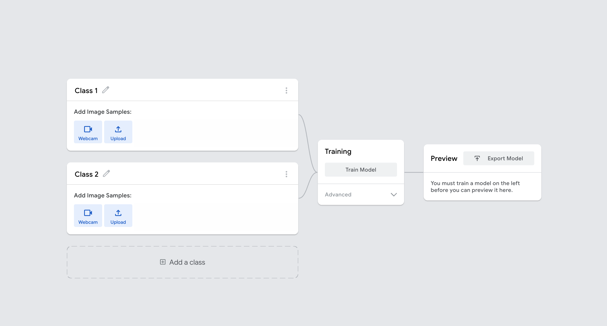
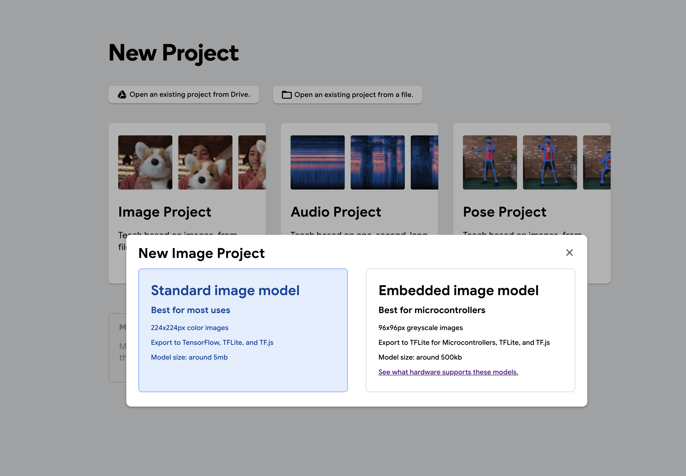

A square image crop
The library center-crops the current frame and resizes it to the export metadata image size; the standard workflow defaults to 224 × 224 RGB.
Teach a classifier with examples
Design classes, collect balanced evidence, export the correct three files, and understand why a whole-frame classifier is not an object detector.
A Teachable Machine image model returns one score for each class you created. It does not automatically locate the object with a bounding box.
The library center-crops the current frame and resizes it to the export metadata image size; the standard workflow defaults to 224 × 224 RGB.
Transfer learning reuses visual features from a compact image network, then learns a small class-specific output head.
With k classes, the output vector has k entries. Hopper returns every label in metadata order as className and probability.
Hopper Studio loads the files and runs inference locally in the browser/desktop app, not on the flight controller.
A two-class model called “landing pad” and “not landing pad” asks a useful decision question. A model called “Class 1” and “Class 2” hides what the examples mean.
| Design choice | Weak version | Stronger version |
|---|---|---|
| Class names | thing / other | landing-pad / background |
| Background | Only empty wall | Floor, hands, furniture, shadows, and near-misses |
| Balance | 300 target, 20 background | Comparable counts and variety per class |
| Variation | One angle and distance | Expected distances, rotations, light, and partial views |
| Validation | Reuse training frames | Hold out a separate scene or recording |


A common final layer converts k class logits into scores that sum to 1. High relative score does not guarantee real-world correctness.
| File | Role | Hopper requirement |
|---|---|---|
| model.json | Graph topology plus references to weight data | Choose the exported TensorFlow.js model file. |
| weights.bin | Stored numeric coefficients | Choose the matching binary file from the same export. |
| metadata.json | Labels, image size, and package metadata | Filename must be metadata.json in the current UI. |
Load all three together in Vision Testing. The Studio returns the metadata labels, center-crops the current frame, uses no horizontal flip, and evaluates the whole frame.
const predictions = await vision.classifyCustomModel();
for (const item of predictions) {
console.log(item.className, item.probability.toFixed(3));
}
const padVisible = await vision.seesCustomLabel(
"landing-pad",
0.75,
);predictions = scan_custom_model()
for item in predictions:
print(item.className, item.probability)
if sees_custom_label("landing-pad", confidence=0.75):
print("Landing-pad class is above threshold")Precision asks how many positive predictions were correct. Recall asks how many real positives were found.
The model announces the target when it is absent. Add hard negatives and require repeated confirmation.
The target is present but scores below threshold. Add diverse target examples and improve framing.
The model learns a table, hand, or lighting pattern rather than the intended object.
Training webcam imagery differs from the drone feed in crop, exposure, blur, or viewpoint.
The final classification head has one output per class. Changing k changes the final weight matrix and bias vector; different Teachable Machine export versions can also change the backbone or metadata.